קריאות שבר, אחזקה מונעת, נכסים, תקציב ודוחות — הכול במערכת אחת. ופתיחת תקלה? מתחילה בהודעת וואטסאפ פשוטה. מערכת full-stack שבניתי מקצה לקצה.
טלפון, וואטסאפ ופתקים — בלי מעקב אחיד, ובלי לדעת מה נפתח ומה נסגר.
עד שמשהו נשבר — ואז זה טיפול דחוף, יקר ובלחץ.
מי אחראי? מה בוצע? מה חורג מ-SLA? התשובות מפוזרות בכל מקום.
קריאות פתוחות, משימות מונעות, מד בריאות מבנה, ביצוע לפי מערכת ותקציב — במבט אחד.
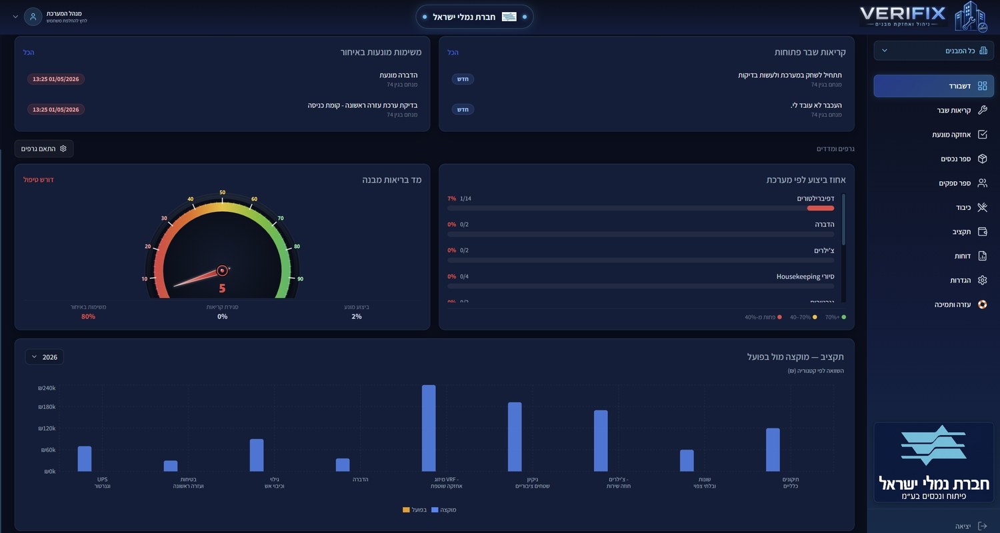
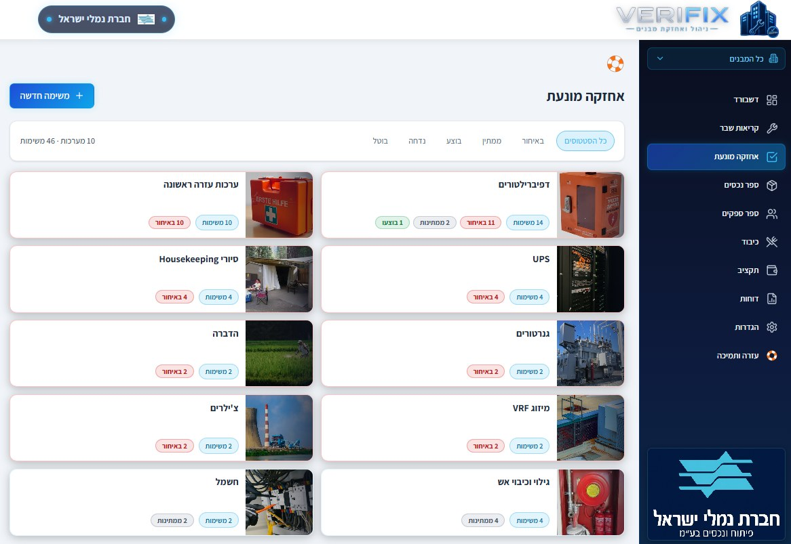
צופים בדשבורד, פותחים קריאות ומקבלים עדכונים — ישירות מהטלפון, בכל מקום ובכל זמן.
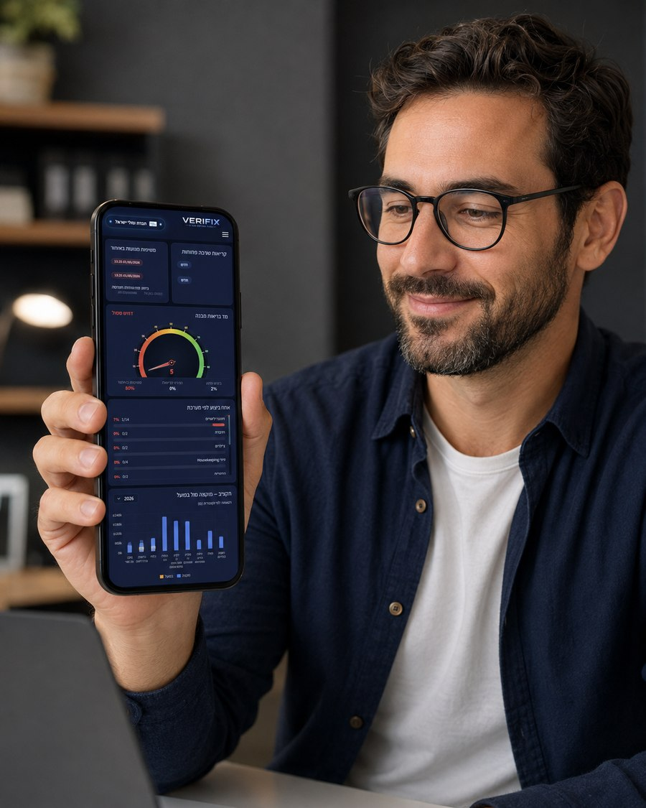
בלי אפליקציה ובלי הדרכה. שולחים הודעת וואטסאפ רגילה על התקלה — והמערכת פותחת קריאה לבד.
תוכניות תחזוקה מחזוריות שמתוזמנות אוטומטית לפי נכס ותדירות — עם תזכורות שיוצרות את המשימה הבאה בזמן, כדי ששום דבר לא ייפול בין הכיסאות.
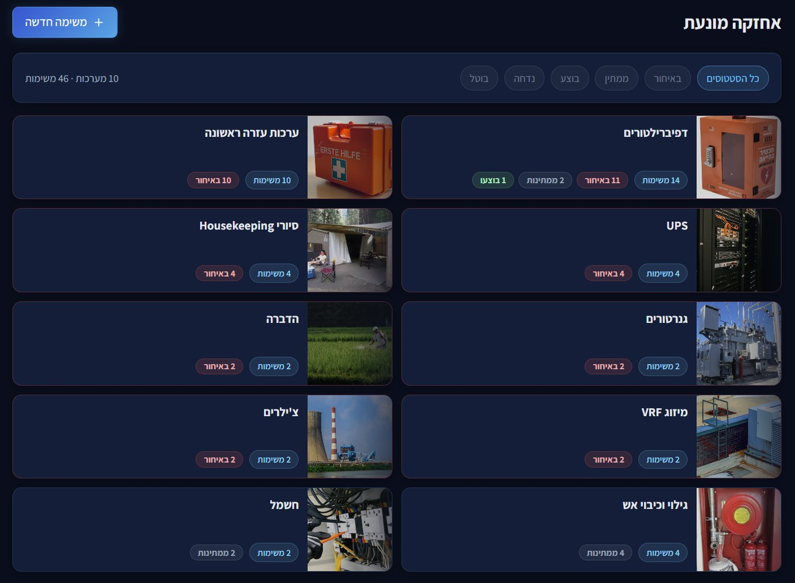
ספר נכסים מלא עם תמונות והיסטוריה לכל מבנה ומערכת, וספר ספקים עם שיוך לקריאות ומעקב ביצוע. הכול מקושר — מהתקלה ועד הנכס והספק שטיפל.
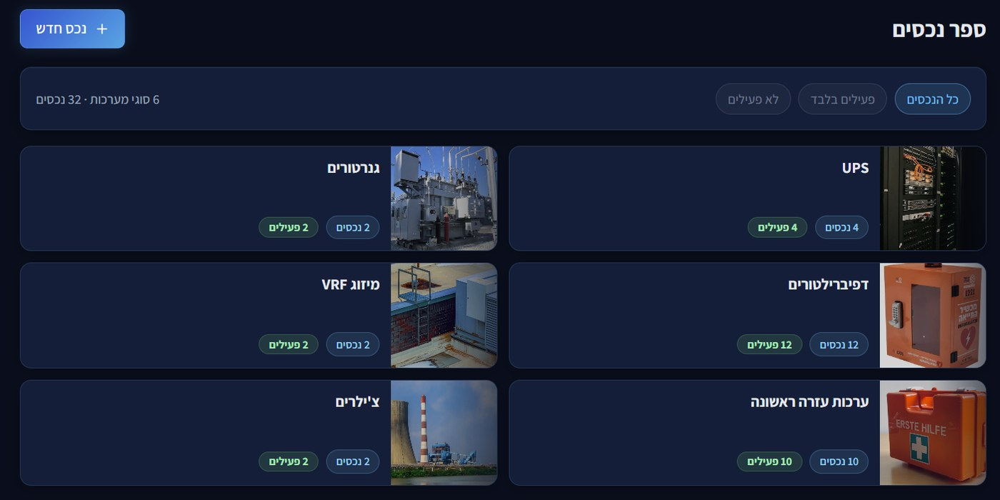
ייצוא גיבוי מלא של כל נתוני המערכת לקובץ אחד — מבנים, נכסים, קריאות, אחזקה מונעת, ספקים, תקציב ומשתמשים — ושחזור בקלות בכל רגע.
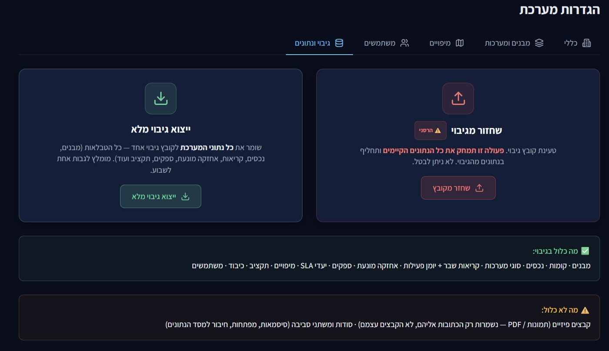
מדריכים מובנים וחיפוש לכל נושא: קריאות שבר, אחזקה מונעת, דוחות, ספקים, וואטסאפ וטפסים ועוד — כדי שכל משתמש יסתדר לבד, מהיום הראשון.
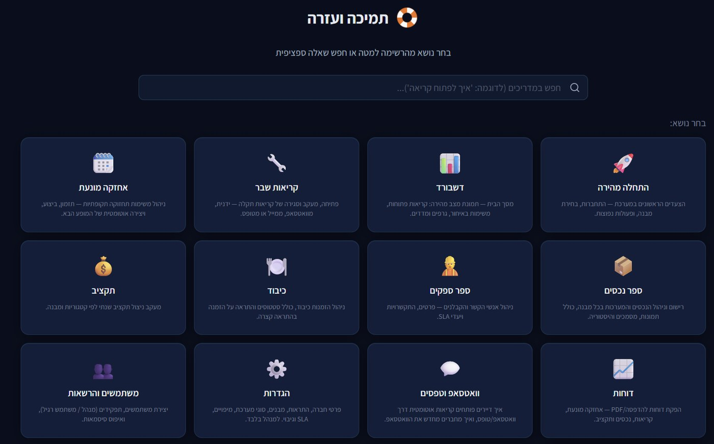
ככה המערכת הופכת נתונים לתובנה: מפת תקינות, כרטיס נכס מלא, בקרה חכמה ומלאי מבוקר.
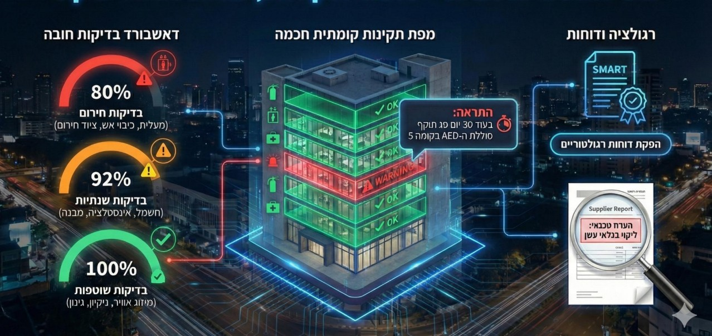
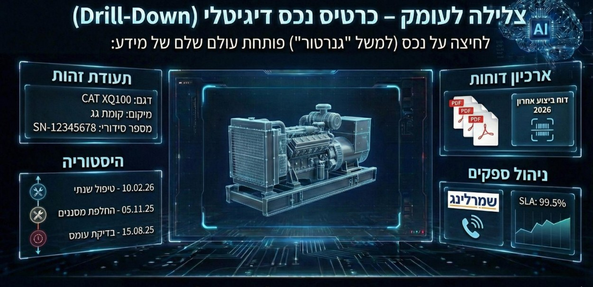
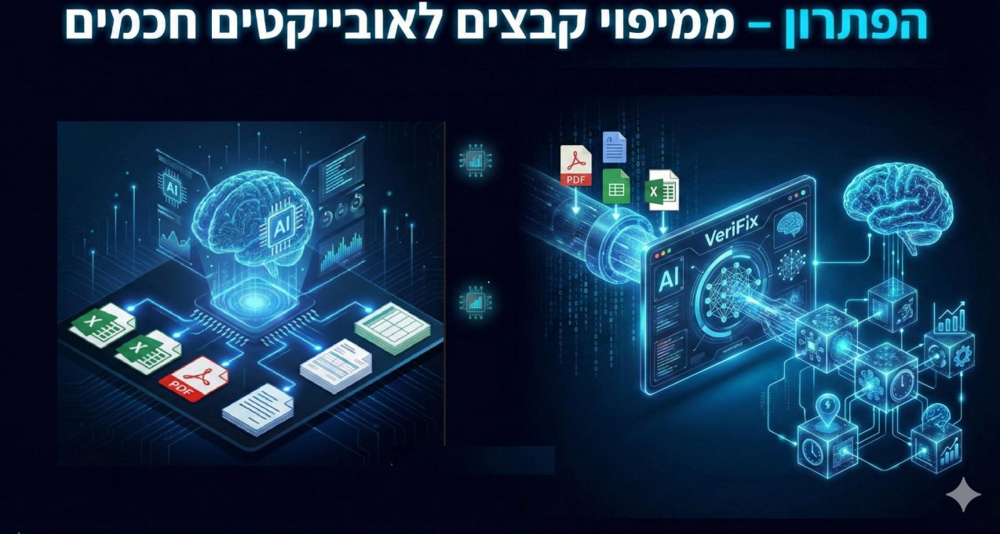
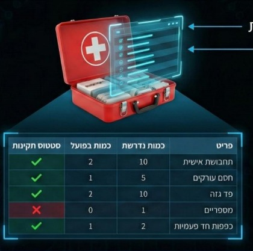
פתיחה מוואטסאפ או מטופס, שיוך ואחריות, סגירה ומדידת עמידה ב-SLA.
מי שמעדיף — טופס ייעודי לפתיחת קריאה, עם צירוף תמונה של התקלה.
למשימות מונעות, לקריאות פתוחות ולחריגות — כדי ששום דבר לא נשכח.
מוקצה מול בפועל לפי קטגוריה ומבנה — עם זיהוי חריגות.
עשרות מבנים במקביל, עם מעבר מהיר וסינון לכל אתר.
מנהל, משתמש רגיל וקבלנים — כל אחד רואה בדיוק את מה שצריך.
מגוון רחב של דוחות מדויקים, מוכנים לייצוא ולהדפסה — להציג בביטחון מול ההנהלה.
מה תוכנן, מה בוצע ומה באיחור — לכל נכס ומערכת.
כל התקלות, זמני הטיפול והעמידה ביעדי ה-SLA.
רשימת הנכסים והמערכות המלאה, עם מצב והיסטוריה.
מוקצה מול בפועל, פילוח קטגוריות וחריגות.
ספקים, ביצוע לפי מבנה ועוד — לפי מה שהעסק צריך.
כל דוח ל-PDF/הדפסה בלחיצה — מוכן לישיבה.
VeriFix אינה תוכנה גנרית. כל עסק יכול להזמין מערכת שמותאמת בדיוק לתהליכי העבודה שלו — השדות, המסכים, הדוחות וההרשאות שלכם. אתם מתארים איך אתם עובדים, ואני בונה את הכלי שמשרת בדיוק את זה.
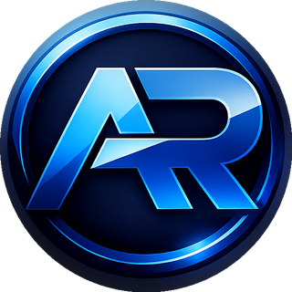
20 שנה של הובלת תהליכים עסקיים ומערכות ERP. אני בונה מערכות מלאות שרצות בפרודקשן עם משתמשים אמיתיים — קודם מבין את התהליך העסקי, ואז בונה את הכלי שמשרת אותו. VeriFix היא בדיוק זה: מערכת full-stack שנבנתה מקצה לקצה.
מנהלים תחזוקה, נכסים או תפעול? נבנה יחד מערכת שמתאימה בדיוק לכם — קריאות, אחזקה מונעת, SLA, תקציב ודוחות. דברו איתי ונתחיל מאפיון קצר.